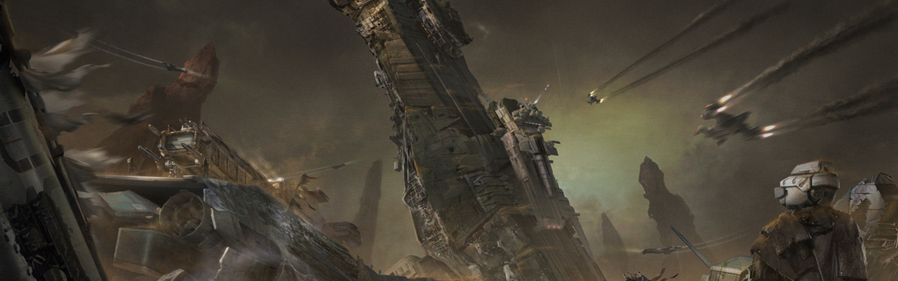

SYSTEM: NUL

Excurs - System: Nul
Ihr wollt so nah wie möglich an einen UEE Kampfträger rankommen, ohne der Navy beizutreten oder schreckliche Akte der Piraterie zu begehen? Dann ist Nul der Ort dafür! Als eines der zuerst von Menschen entdeckten Systeme, wurde Nul zuerst von NavJumper Antoine Lebec im Jahre 2290 entdeckt. Folklore behauptet, dass der Name des Systems von einem Missverständnis herrührt. Nach seiner ersten Erkundung im System wurde Lebec gefragt, ob er etwas Interessantes gefunden hatte. Darauf antwortete er mit „nul.“
Nul ist ein klassischer Cepheid Stern, ein gelber Supergigant, der ab und zu 10 bis 15 Prozent an Standardgröße gewinnt. Auch wenn es ein leicht zu durchquerendes System ist, macht es die Natur des Sterns doch extrem schwierig, dort zu leben.
In den Jahrhunderten seit Nuls Entdeckung haben die Menschen drei separate Versuche unternommen, Terraforming-Operationen voranzutreiben. Keine davon ist je über die Studienphase hinausgekommen, da in jedem Fall die Gutachter zum dem Schluss gekommen sind, dass trotz aller Fortschritte in der Terraforming-Technologie, das System für jegliche Art der menschlichen Besiedlung ungeeignet wäre. Die meisten Analysten, die sich mit dem System auskennen, glauben, dass es keinen Grund gibt, die dünn besiedelten Orte zu besuchen und in Anbetracht der Gefahren durch den Stern selbst auch keinen Grund, durch das System zu fliegen.
Das System selbst hat sich jedoch einen deutlich ruchloseren Ruf eingehandelt. Warnungen der Advocacy aus den vergangenen Jahren deuten darauf hin, dass Entführungen im Nul-System zunehmen und dass dort potentiell eine Sklaverei-Bande zu Hause ist. Reisenden wird empfohlen, alternative Routen zu wählen, statt einen Weg durch Nul zu nehmen.

„Wir wechseln mit Euch ein paar Worte über Eure Zukunft. Entweder Ihr habt eine oder nicht.“ – Eröffnungssatz, den der Sklavenhändler Migo „Skiv“ Renks an seine Opfer vor dem Angriff richtete.
Nul ist ein klassischer Cepheid Stern, ein gelber Supergigant, der ab und zu 10 bis 15 Prozent an Standardgröße gewinnt. Auch wenn es ein leicht zu durchquerendes System ist, macht es die Natur des Sterns doch extrem schwierig, dort zu leben.
In den Jahrhunderten seit Nuls Entdeckung haben die Menschen drei separate Versuche unternommen, Terraforming-Operationen voranzutreiben. Keine davon ist je über die Studienphase hinausgekommen, da in jedem Fall die Gutachter zum dem Schluss gekommen sind, dass trotz aller Fortschritte in der Terraforming-Technologie, das System für jegliche Art der menschlichen Besiedlung ungeeignet wäre. Die meisten Analysten, die sich mit dem System auskennen, glauben, dass es keinen Grund gibt, die dünn besiedelten Orte zu besuchen und in Anbetracht der Gefahren durch den Stern selbst auch keinen Grund, durch das System zu fliegen.
Das System selbst hat sich jedoch einen deutlich ruchloseren Ruf eingehandelt. Warnungen der Advocacy aus den vergangenen Jahren deuten darauf hin, dass Entführungen im Nul-System zunehmen und dass dort potentiell eine Sklaverei-Bande zu Hause ist. Reisenden wird empfohlen, alternative Routen zu wählen, statt einen Weg durch Nul zu nehmen.
Innere Planeten: Nul I, Nul II
Die ersten zwei Planeten des Nul Systems sind aufgrund der Natur des Sterns vollständig unbewohnbar. Nul I ist ein um den Stern rotierender Zwergplanet, der langsam während der Expansionsphasen des Sterns weggebrannt wird. Null II ist ein unbewohnter Eisenplanet. Während er ungewöhnlich groß für einen inneren Planeten ist, ist seine Oberfläche durch die Expansion des Sterns aufgebrochen und emittiert nun langsam Gase, die hauptsächlich aus Elementen des verbrannten Mantels des Planeten bestehen.Nul III (Cole)
Cole ist der dritte Planet des Nul Systems, eine wenig bewohnte, terrestrische Welt, die sich am inneren Rand des grünen Bandes befindet. Auch wenn der Planet geologisch ähnlich zur Erde ist, macht die Natur von Nuls Stern den Versuch, dort zu leben, zu einer unangenehmen Angelegenheit. Die Atmosphäre besteht hauptsächlich aus Ammoniak und Schwefel. Flüssigkeiten existieren nur tief unter der Planetenoberfläche während der „heißen Saison“. Zusammengenommen bedeutet dies, dass Umweltanzüge und Atemgeräte zu jedem Zeitpunkt notwendig sind. Die Welt besitzt eine einzige Landezone, Char, die sich aus einer verlassenen Umweltforschungsstation entwickelt hat. Ihr solltet jedoch wissen, dass Char technisch gesehen nicht zum UEE gehört und es damit im Prinzip keine Gesetze gibt.Nul IV
Der vierte Planet im Nul System ist auf den ersten Blick ein typischer Eisgigant, aber seid gewarnt: Der gesamte Planet ist in einem permanenten, elektrischen Sturm gefangen, der kinderleicht jedes Schiff ausschalten kann, das sich dem Planeten nähert. Nul IV nahe Lagrange-Punkte sind übersät mit den Hüllen von Raumschiffen, deren Piloten verrückt genug waren, sich trotz der elektrischen Interferenz zu nähern. Und natürlich voll mit den unglücklichen Crews, die sich entschieden, dass diese Wracks einen guten Preis wert wären.Nul V (Ashana)
Nuls Höhepunkt bietet der fünfte Planet, Ashana, welcher die Heimat eines der einzigartigsten Quartiere im Universum ist – eine Stadt, die auf Basis eines Kampfträgers der Menschen gebaut wurde. Im Jahre 2571 verfolgte die UEES Olympus eine Gruppe von Rebellen und Piraten zurück zu ihrer Behelfsbasis auf Ashana. Der Kommandeur des Schiffs befahl der Olympus einen Angriff auf die Basis, die es jedoch zu nah in die Atmosphäre brachte. Die Reibung verlangsamte die Olympus unter die für ihre Höhe notwendige Mindestgeschwindigkeit und sie konnte sich nicht mehr retten, weshalb sie mitsamt der gesamten Besatzung abstürzte. Die Olympus krachte auf die Planetenoberfläche, wo sie in die Wüstenlandschaft einschlug. Der Absturz zog schnell Plünderer an, die damit begannen, das Schiff leer zu picken, bis sie feststellten, dass sie eine deutlich gemütlichere Umgebung darstellte, als die windigen Höhlen, die sie vorher ihr Zuhause nannten. Als die Navy keine weiteren Kräfte schickte, um das Wrack zu zerstören, zogen die Plünderer ein und verwandelten die Olympus in eine Stadt mit dem selben Namen. Die Korridore und Lagerräume des Trägers beherbergen nun alles von einem Tevarin Marktplatz bis hin zu einem Kaninchenbau voll mit schwer umkämpften, individuellen Behausungen für all diejenigen, die auf dem Planeten leben. Heute ist Olympus eine Semi-Diktatur, mit einem Tevarin namens Nescus, der die ganze Sache leitet. Schwarzmarkt-Güter werden hier ausgetauscht, allerdings nur in geringen Mengen. Die Bewohner wollen der UEE keinen Grund bieten, das Wrack in die Vergessenheit zu bomben.
Reisewarnung
Auch wenn ein gewisses Level der Kriminalität in allen unbeanspruchten Systemen vorhanden ist, weisen Kriminalstatistiken der Advocacy darauf hin, dass Nul unter einem erhöhten Level von Angriffen auf die Zivilbevölkerung leidet, darunter Entführungen und Mord.Ein Flüstern im Wind
„Gefährlicher Stern, hässliche Planeten, es ist, als ob das System bereits feindlich geboren wurde.“ – Auszug aus der Systemeinschätzung von Malcom Fitch, Gutachter, 2619„Wir wechseln mit Euch ein paar Worte über Eure Zukunft. Entweder Ihr habt eine oder nicht.“ – Eröffnungssatz, den der Sklavenhändler Migo „Skiv“ Renks an seine Opfer vor dem Angriff richtete.